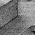

I wisely started with a map, and made the story fit (generally with meticulous care for distances). The other way about lands one in confusions and impossibilities, and in any case it is weary work to compose a map from a story – as I fear you have found.
— J. R. R. Tolkien (1892–1973), to Naomi Mitchison, 25 April 1954
 ‘Ruins’ so far contains two disconnected rooms. It is time to extend it into a modest map in which, as promised, the Square Chamber lies underneath the original Forest location. For the map of the finished game, see §23 below, but here is the beginning of the first level beneath ground, showing the Square Chamber and its two main side-chambers:
| Square Chamber | — | Wormcast |
| | | ||
| Corridor | ||
| | | ||
| Shrine | ||
To make these map connections, we need to add:
u_to Forest, e_to Wormcast, s_to Corridor,
to the Square Chamber. This seems a good point to add two more map connections, or rather non-connections, to the Forest as well:
u_to "The trees are spiny and you'd cut your hands to ribbons
trying to climb them.",
cant_go "The rainforest is dense, and you haven't hacked
through it for days to abandon your discovery now. Really,
you need a good few artifacts to take back to civilization
before you can justify giving up the expedition.",
The property cant_go contains what
is printed when the player tries to go in a nonexistent direction,
and replaces “You can't go that way”. Instead of
giving an actual message you can give a routine to print one out,
to vary what's printed with the circumstances. The Forest needs a
cant_go because in real life one could go in every
direction from there: what we're doing is explaining the game
rules to the player: go underground, find some ancient treasure,
then get out to win. The Forest's u_to property is
a string of text, not a room, and this means that attempts to go
up result only in that string being printed.
▲
Here's how this is done. When the library wants to go in a certain
direction, let's say “north”, it sends the message
location.n_to() and looks at the reply: it takes
false to mean “Player can't go that way” and
says so; true means “Player can't go that way,
and I've already said why”; and any other value is taken as
the destination.
•
EXERCISE 8
Many early games have rooms with confused exits: ‘Advent’
has Bedquilt, ‘Acheton’ has a magnetic lodestone which
throws the compass into confusion, ‘Zork II’ has a
spinning carousel room and so on. Make the Wormcast room in
‘Ruins’ similarly bewildering.
· · · · ·
For each of the twelve standard Inform directions there is a “direction property”:
n_to s_to e_to w_to d_to u_to ne_to nw_to se_to sw_to in_to out_to
Each direction also has a “direction object”
to represent it in the game. For instance, n_obj is
the object whose name is “north” and which the player
invokes by typing “go north” or just “n”.
So there are normally twelve of these, too:
n_obj s_obj e_obj w_obj d_obj u_obj ne_obj nw_obj se_obj sw_obj in_obj out_obj
Confusing the direction objects with the direction
properties is easily done, but they are quite different. When the
player types “go north”, the action is Go n_obj,
with noun being n_obj: only when this action
has survived all possible before rules is the n_to value
of the current location looked at.
▲
The set of direction objects is not fixed: the current direction
objects are the children of a special object called compass,
and the game designer is free to add to or take from the current
stock. Here for instance is the definition of “north”
made by the library:
CompassDirection n_obj "north wall" compass with name 'n' 'north' 'wall', door_dir n_to;
CompassDirection is a class defined
by the library for direction objects. door_dir is
a property more usually seen in the context of doors (see
§13) and here tells Inform which
direction property corresponds to which direction object.
•▲
EXERCISE 9
In the first millennium A.D., the Maya peoples of the Yucatán
Peninsula had ‘world colours’ white (sac),
red (chac), yellow (kan) and black (chikin)
for what we call the compass bearings north, east, south, west
(for instance west is associated with ‘sunset’, hence
black, the colour of night). Implement this.
•▲
EXERCISE 10
In Level 9's version of ‘Advent’, the magic word “xyzzy”
was implemented as a thirteenth direction. How can this be done?
•▲
EXERCISE 11
(Cf. ‘Trinity’.) How can the entire game map be
suddenly eastwest reflected?
•▲▲
EXERCISE 12
Even when the map is reflected, there may be many room descriptions
referring to “east” and “west” by name.
Reflect these too.
•▲▲
EXERCISE 13
Some designers find it a nuisance to have to keep specifying all
map connections twice: once east from A to B, then a second time
west from B to A, for instance. Write some code to go in the
Initialise routine making all connections automatically
two-way.
•
REFERENCES
‘Advent’ has a very tangled-up map in places (see the
mazes) and a well-constructed exterior of forest and valley giving
an impression of space with remarkably few rooms. The mist object uses
found_in to the full, and see also the stream (a single
object representing every watercourse in the game). Bedquilt and
the Swiss Cheese room offer classic confused-exit puzzles.
•For a simple movement rule
using e_to, see the Office in ‘Toyshop’.
•The opening location of Infocom's
‘Moonmist’ provides a good example of cant_go used
to guide the player in a tactful way: “(The castle is south of
here.)”
•The library extension "smartcantgo.h"
by David Wagner provides a system for automatically printing out
“You can only go east and north.”-style messages.
•Ricardo Dague's "cmap.h"
constructs maps of American-style cities. The same author's "makemaze.inf"
prints out Inform source code for random rectangular mazes.
•Nicholas Daley and Gunther Schmidl
have each independently written a "dirs.h"
providing a “dirs” or “exits” verb which
lists available exits. Marnie Parker's "dirsmap.h"
goes further by plotting up exits in map style or writing them out
in English, at the player's discretion.
•Brian D. Smith's example program
"spin.inf" abolishes the convention that a player
has an in-built ability to know which way is north: it replaces conventional
compass directions with “left”, “right”,
“ahead” and “back”.